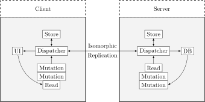

Recenser les disponibilités.
Recenser les questions d'intérêts.
Réunir les personnes autour des questions d'intérêt selon leur disponibilités.
Organiser un rendez-vous hebdomadaire avec des thèmes décidés par vote.
Organiser le temps de parole des intervenants par vote.
{
:id ObjectId
:question String
:author RefObjectId
:date Number
:upvotes Vector<RefObjectId>
:participants Vector<Hash<RefObjectId, Number>>
}{
:id ObjectId
:comment String
:on RefObjectId
:author RefObjectId
:date Number
:upvotes Vector<RefObjectId>
}{
:id ObjectId
:name String
:token String
}{
:id ObjectId
:date Number
:questions Vector<Question>
:participants Vector<Hash<Citizen, Time>>
}